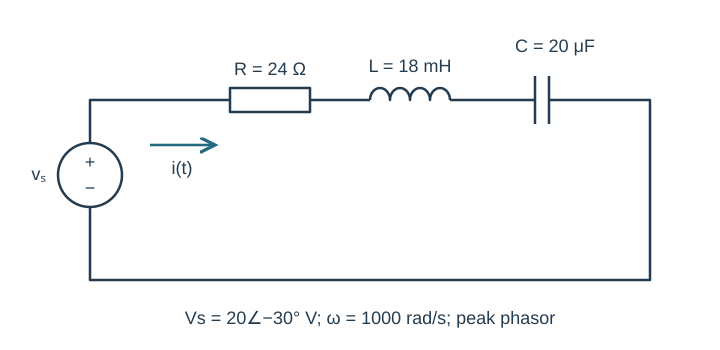
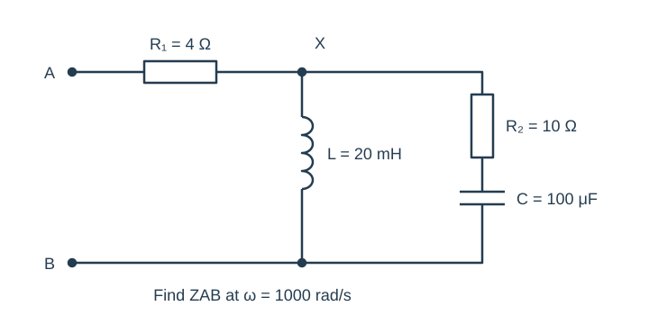
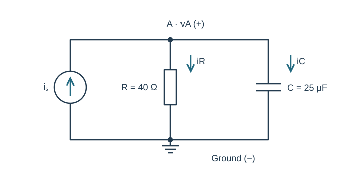
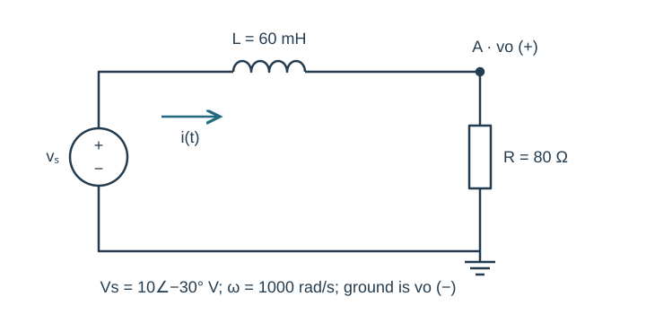
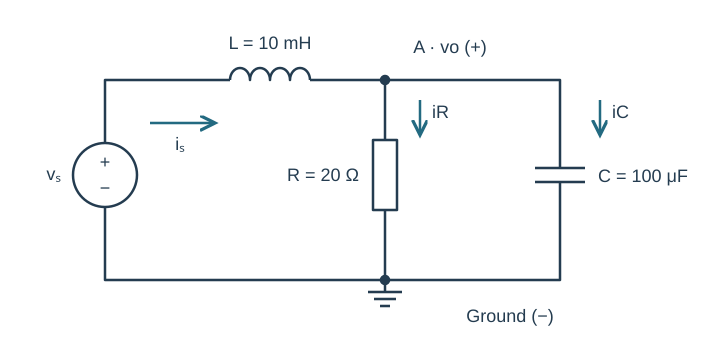

Course practice / Batch 07 / 2026-10-11 PDT
ENGR 202
正弦、相量与阻抗
Sinusoids, phasors & impedance · 第 7 组：HW 1 风格 5 题 + HW 2 风格 5 题
Build a cosine from amplitude, frequency and phase
A sinusoidal voltage has peak amplitude 7 V, frequency 600 Hz, and cosine-reference phase +120°. Let t be in seconds.
- Write v(t) with the phase in radians, then state angular frequency, period in seconds and period in ms.
- Give its peak phasor and calculate v(0).
- Find the first minimum and the first upward zero crossing at or after t = 0.
- Sketch the waveform for one period from t = 0. Label both requested events and both axes with units.
中文提示（不含解答）
先从 Hz 得到角频率；向上过零时导数为正，与向下过零不同。
A negative amplitude followed by a delay
Let \(x(t)=-6\cos(900t-\pi/3)\;\mathrm V\). Its period is T, and \(y(t)=x(t-T/3)\).
- Rewrite x with a positive cosine amplitude and a principal phase in (−180°,180°]. State X.
- Calculate T and the delay T/3 in ms. Find Y and write y(t) as a positive-amplitude cosine.
- Evaluate x and y at t = 0 and t = T/4. Verify your shifted expression by direct substitution into the original x.
- Draw X and Y on equal-scale complex axes and describe the direction and angle of the phasor rotation caused by the delay.
中文提示（不含解答）
先用半圈相位变化吸收负幅值，再处理向右平移造成的相位减少。
Reciprocals of a conjugate pair
Let \(z_1=8+j6\) and \(z_2=8-j6\). Define \(w=(1/z_1+1/z_2)^{-1}\).
- Give z1 and z2 in polar form, and explain their geometric relationship in the complex plane.
- Compute z1 + z2, z1 z2, 1/z1 and 1/z2 in rectangular form.
- Find w by adding the reciprocals, then independently by rewriting w = z1z2/(z1 + z2). Give w in polar form.
- Verify w(1/z1 + 1/z2) = 1 and explain why w is real even though neither input number is real.
中文提示（不含解答）
共轭复数的虚部相反；做倒数时乘以共轭，让分母变成实数。
Add two unequal symmetric-angle signals
Let \(v_1(t)=3\sqrt2\cos(600t+\pi/4)\;\mathrm V\) and \(v_2(t)=5\sqrt2\cos(600t-\pi/4)\;\mathrm V\). The required total is v = v1 + v2.
- Convert both peak phasors to rectangular form.
- Find the total phasor in rectangular and polar form, then write one positive-amplitude cosine for v(t).
- Check both the original sum and combined expression at t = 0 and t = π/1200 s.
- Draw a scaled tip-to-tail addition. Explain why symmetric phase angles do not force the total phase to be zero when the amplitudes differ.
中文提示（不含解答）
分别展开实部与虚部；角度对称但幅值不同，虚部一般不会完全抵消。
Recover the additional phasor needed for a target
At ω = 400 rad/s, an existing voltage has peak phasor \(A=6\angle(-30^\circ)\;\mathrm V\). A second voltage U is added so that the total becomes \(B=10\angle30^\circ\;\mathrm V\). Thus A + U = B.
- Find A and B in rectangular form, then determine U in rectangular and polar form.
- Write the time-domain voltage u(t) and the total waveform b(t).
- Verify A + U = B in rectangular form and by checking the waveforms at t = 0 and t = π/800 s.
- Draw A followed by U to reach B, with equal-scale real and imaginary axes labelled in volts.
中文提示（不含解答）
要求的额外信号等于目标减去已有信号；不要只对两个幅值作减法。
A series RLC loop with net capacitive reactance
The source \(v_s(t)=20\cos(1000t-\pi/6)\;\mathrm V\) drives R = 24 Ω, L = 18 mH and C = 20 μF in series. Define clockwise current from the positive source terminal and passive element voltages as drops along that current.
- Draw and label the impedance circuit, including the source phasor.
- Find total impedance and current in rectangular and polar form, then write i(t).
- Calculate VR, VL and VC; verify VR + VL + VC = Vs.
- State whether current leads or lags the source and by how many degrees. Explain how the sign of the total reactance agrees with your answer.

中文提示（不含解答）
电感和电容的阻抗先相加，再与电阻组合；相量相除时相位相减。
An inductor parallel to a series RC branch
At ω = 1000 rad/s, terminal A connects through R₁ = 4 Ω to node X. From X to terminal B are two branches in parallel: one is L = 20 mH; the other is R₂ = 10 Ω in series with C = 100 μF. There are no other connections.
- Compute each element impedance and the complete series-RC branch impedance.
- Find the parallel equivalent between X and B, then ZAB. Give both in rectangular and polar form.
- Verify the parallel equivalent by adding the two branch admittances.
- For applied peak voltage VAB = 12∠(−45°) V, find the input current phasor and state its phase relative to the applied voltage.

中文提示（不含解答）
R₂ 与 C 必须先组成一条完整串联支路，再与 L 并联；R₁ 最后加入。
Convert a sine source before solving the node
The current source \(i_s(t)=0.20\sin(1000t+3\pi/4)\;\mathrm A\) injects current upward into node A. R = 40 Ω and C = 25 μF each connect directly from A to ground. Define vA positive at A, and IR and IC downward.
- Convert the source to a cosine-reference peak phasor, and draw the impedance circuit.
- Find total admittance, then VA in rectangular and polar form; write vA(t).
- Calculate IR and IC and verify their sum equals Is.
- Calculate vA(0) and compare the phases of both branch currents with VA. Explain which branch current leads the node voltage.

中文提示（不含解答）
先统一正弦源和余弦相量的参考；电容电流相对于端电压超前。
Measure the resistor voltage in an RL loop
The source \(v_s(t)=10\cos(1000t-\pi/6)\;\mathrm V\) drives L = 60 mH in series with R = 80 Ω. From the source’s positive terminal, the inductor comes first and the resistor connects node A to ground. Define vo from A to ground and current clockwise.
- Compute total impedance, then the current phasor.
- Use impedance division to find Vo in rectangular and polar form, and write vo(t).
- Find the inductor voltage as a drop along the current and verify VL + Vo = Vs.
- State the phase of Vo relative to the source and relative to current. Calculate vo at t = 0 and t = π/2000 s.

中文提示（不含解答）
输出在电阻两端，因此与电流同相，但不一定与源电压同相。
An inductor feeding a parallel RC load
The source \(v_s(t)=6\cos(1000t+\pi/6)\;\mathrm V\) connects through L = 10 mH to node A. R = 20 Ω and C = 100 μF each connect from A to ground. Define output vo from A to ground, source current through L toward A, and both load currents downward.
- Reduce the parallel load and find the total input impedance.
- Find source-current and output-voltage phasors in rectangular and polar form, then write vo(t).
- Find the resistor and capacitor currents and verify KCL. Find the inductor voltage along the source-current direction and verify KVL.
- Predict vo at t = 0 and t = π/2000 s. For optional LTspice checking, give source frequency in Hz and the equivalent sine-source phase; compare the two positions in a late cycle after transients settle. Match the current references and label plot axes with units.
- Compare source and output peak voltages using your KVL result. Explain why ordinary addition of the positive voltage magnitudes would not be a valid KVL check.

中文提示（不含解答）
先化简并联支路，再使用串联分压；仿真中的正弦相位要与手算的余弦参考一致。